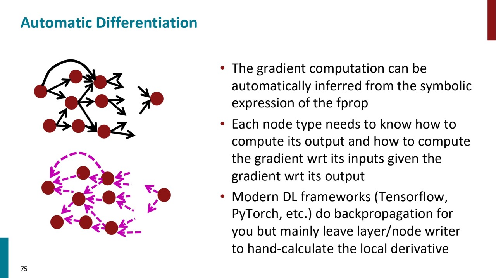

Stanford CS224N 深層学習による自然言語処理 Lecture 3 まとめ
今日は3回目のレクチャーです。今回の授業は自然言語処理とは関係しなくて、深層学習の内容になります。その辺に詳しい方はこのレクチャーを飛ばして良いです。

今回の講義では、ニューラルネットワークの学習に関する数学的詳細について説明します。まず、ニューラルネットワークの訓練のための勾配を手作業でどのように計算するかを見ていきます。次に、それがよりアルゴリズム的にどのように行われるかを見ていきます。つまり、Back propagationのことです。
また、シラバスのSuggested Readingの部分にはいくつかの補足資料がありまして、そちらを見るのは強くおすすめします。
NERは、テキスト内の単語を人名、場所、製品、日付、時間などのエンティティカテゴリにラベル付けするタスクです。単純な辞書を使うだけではなく、文脈を利用して正確な認識を行う必要があります。
一番シンプルのやりかたはウィンドウサイズを定義し(例えば5)、5つのワードベクトルを横で繋いて、それをニューラルネットワーク層に通してロジスティック分類器を作ることです。それで中心にある単語は地名かを判断します。人名や他のことを判断するときは、ぞれぞれ2値分類器を作ります。
このスライトをに詳細な計算方法を示しています。インプットxをまず隠れ層を通してhになります。また、ベクトルを数値に変換するためにuと内積を取ってスケールのsになります。sをロジスティクス関数で0から1の数値に変換します。
上記のモデルを学習するために、パラメーターから目的関数の偏微分を差し引くする必要があります。その計算は手動と自動の2つのやり方があります。それもこれから説明することです。
行列微分計算
多変数微分は、行列を使用すると単一変数の微分と同じです。行列を使わないよりもはるかに高速で有用ですが、そこまで直感ではありません。

例えば、 \(f(x)=x^3\) の式があります。その式の勾配は微分のことです。つまり、インプットを少し変えると、アウトプットをどうなるかのことです。
関数に複数のインプットがある場合は、各インプットの偏微分はベクトルになります。
関数に複数のインプットと複数のアウトプットを持つ場合は、各アウトプットが各インプットに対する偏微分は行列になります。例えば、1行目の1列はアウトプット1がインプット1に対す偏微分です。それはヤコビ行列と言います。

複数の関数をパイプラインで組み合わせしている場合は、微分は各関数の微分の掛け算です。ヤコビ行列の時も同じです。
例えば、Sigmoid等の活性化関数は入力値に対して個別に適用するため、ヤコブ行列の中の行と列が一致しない場合は偏微分は0で、一致する場合のみ偏微分が計算されます。最終結果が対角線行列になります。
他もいくつかの例を上げました。
先程の簡単なネットワークに戻します。通常は目標関数の偏微分を計算する必要がありますが、今回は説明の簡単さから考えて、その手前の偏微分を計算します。
上記の式をもう少し分解してみます。(青字の部分)
まず、パラメーター \(b\) の偏微分を計算します。先程紹介したChain ruleで微分式を3つに分解することができます。
先程の紹介したヤコビ行列の結果を参照することで最終結果を出すことができます。
ちなみに、最終結果の中にある「○」とは、アダマール積と言います。同じサイズの行列に対して成分ごとに積を取ることによって定まる行列の積です。

次に、 パラメーターの\(W\)の偏微分を計算します。
式を分解すると、それは \(b\) の偏微分と似ています。

計算の時だけではなくて、実装の時も同じ部分を1回のみ計算して重複使用しています。
また、インプットの次元すは1, アウトプットの次元数は\(n \times m\)場合は、ヤコビ行列の結果は \(1 \times n \times m\) になります。一方、パラメーター \(W\) の次元数は \(n \times m\) なので、これで後続の引き算ができません。そのため、勾配がパラメーターの次元数と同じようにしたいです。
どうやってそれが達成できるのでしょうか。 結果としては \(\delta^T x^T\) で計算するとそうなります。要は前の項は \(\delta\) のことがわかります。後ろの項の計算結果は \(x\) になるはずです。
このスライドで説明する意図が分からなかったです。
もともとの計算は転置がないですが、 \(W\) の形に合わせるために転置の操作をいれました。
ヤコビ行列の形がShape Conventionと違いますが、Assignment2のところで実装しやすいためにShape Conventionに沿ってやってください。
実装する際に、ヤコビ行列で計算して、最後にShape Conventionの形に変換するのは一つのやり方です。こちらの方は実装上やりやすいです。もう一つのやり方としては常にShape Conventionにそってやることです。このやり方だと、いつもパラメーターの次元を意識しながら実装しないとエラーになるため、ややこしいです。
逆伝播
今までの話は逆伝播に近いです。逆伝播は単純に微分して、微分の結果を用いてパラメーターをアップデートすることです。
前に話したもう一つのトリックとして、微分の結果を重複に使うことです。
自動微分システムがあります。それはニューラルネットワークをグラフに表現して計算しています。グラフのソースノードはインプットです。中間のノードは各計算ステップです。エッジに沿って計算結果を渡します。
このやり方で、順伝播(Forward Propagation)ができます。でも、逆伝播もしないといけないです。それは次のスライドから話します。
逆伝播は順伝播と同じように、エッジに沿って、最終結果からソースノードへ逆方向に渡します。
一個のノードを例として話します。 \(h=f(z)\) の式について、そのノードは下流の勾配を受けて、上流に伝播します。
そのノード自身の勾配もあるので、Chain ruleを利用して、勾配をアップデートして上流に渡します。
基本的には下流の勾配を自身の勾配を掛け算して上流に渡します。
上流に複数のノードがある場合は、ローカル勾配も複数用意して上流に渡します。
一個シンプルな例で実際に計算します。例えば、右上の式と各パラメーターの値があります。それを各ステップに分解すると、式は左になり、その順伝播のグラフは下になります。
まず、各ノードの勾配を算出します。その結果は右下の式になります。
次に逆伝播します。最終の結果の勾配は1です。
それを前に伝播すると計算結果は青字の通りになります。
最終的に各エッジの勾配を算出することができます。
これで、最終的結果に対するインプットの勾配も計算できます。
上記の例にある \(y\) は2つのノードから勾配を受けていますが、足し算で \(y\) の勾配になります。
また、微分の計算からにもわかりますが、足し算の場合は、下流の勾配は直接上流に流れます。
Max計算の場合は、勾配は一個のノードへ渡して、もう一個は0です。
掛け算の場合は、上流の2つのノードの勾配は順伝播の値の交換になります。
それぞれのノードの別で計算するのは効率ではないです。
効率のやり方としては、各ノードのローカル勾配を一括で計算して、前の計算結果を活かして後ろから一個一個計算して行くことです。
上記のことの全体像はこのスライトにあります。このやり方の重要なところとしては、逆伝播と順伝播の計算量は同じ複雑度になります。

また、それで自動微分システムも作れます。現在主流のTensorflowやPyTorchはこの仕組みを利用しています。
こちらは自動微分システムを実装する際に全体像のPseudo codeです。
全体の流れ以外、各種類のノードを手動で定義する必要があります。これは掛け算のコードです。
後いくつかの補足があります。
実装したことが正しいかをチェックするために、直接インプットに小さい変化を与えて、アウトプットの変化は勾配に近いを見ることができます。
一方それはあくまでも近似するやり方ですし、計算も非常に遅いです。
今回の授業は主に逆伝播のことを話しました。
逆伝播は、計算グラフに沿ってChain ruleを再帰的かつ効率的に適用します。下流の勾配が上流の勾配と局所勾配の積と等しくなります。
PyTorch等の深層学習フレームワークがあるので、中身を実際に知る必要はありません。
しかし、このクラスでは、これらのことがどのように実装されているかを実際に学んでいることを期待しています。それにより、より深い理解を得ることができます。そして、時には深い理解が必要になることがあります。なぜなら、バックプロパゲーションは常に完全には機能しないからです。だから、それが実際に何をしているのかを理解することは、デバッグにとって非常に重要になることがあります。
(例えば、勾配爆発・消失のこと、また並列処理の問題を解決するには、今日学んだ知識が必要となってきます)